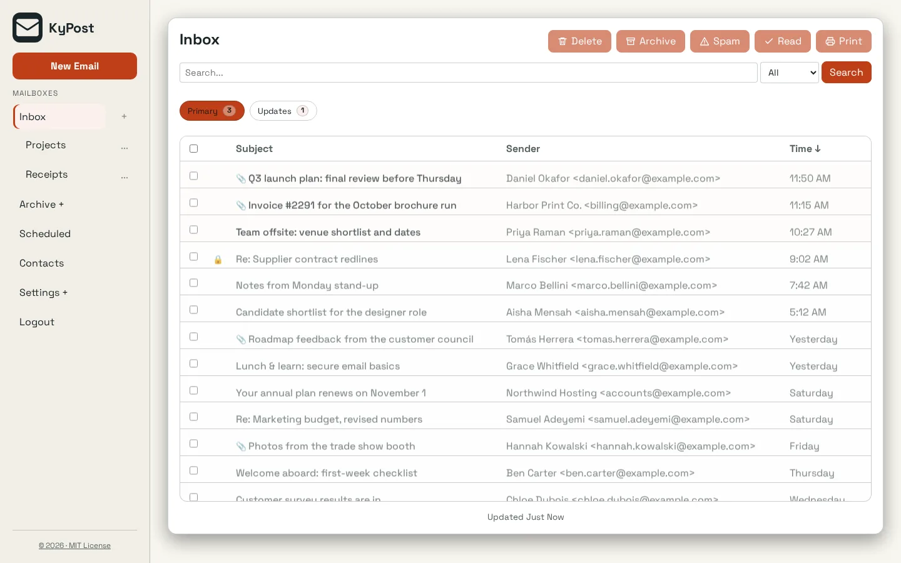
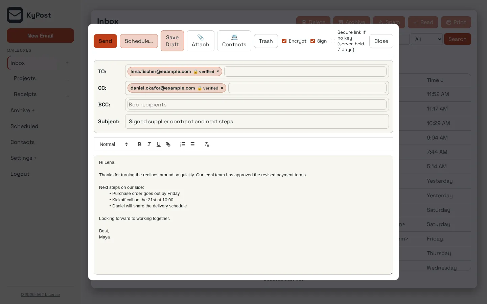

Keep your provider
KyPost sits between your existing IMAP and SMTP mailbox and your devices. You do not have to become a mail-delivery operator to use it.
KyPost / Email
Keep the mailbox you already use, with a private hub that connects your devices and puts you in control of your email.
Open source (MIT) · Open betaScreenshots


Inside KyPost
KyPost sits between your existing IMAP and SMTP mailbox and your devices. You do not have to become a mail-delivery operator to use it.
Scan a QR code from Security, then Devices, in the web app; each code expires after 90 seconds. Every device gets its own credential in the platform keystore. Lose a phone, revoke the phone.
Filter rules, contacts and the classifier that sorts your inbox run on your server. By default nothing about your mail leaves it for a cloud model.
Encrypted mail is decrypted only on the devices you enroll. The server and the push relay never hold the key.
Turn on device encryption, multi-factor sign-in, local sorting and push delivery when you are ready, not all at once.
Client builds are signed and every download ships with a digest you can check before installing.
How it fits together
Your server stores mailbox credentials and mail data. Its operator is responsible for access, updates and backups. Notification providers may process delivery data when enabled.
Read the KyPost privacy policy. For data on an independently operated installation, contact its operator.
Next step
The project documentation is the place for current requirements and instructions.